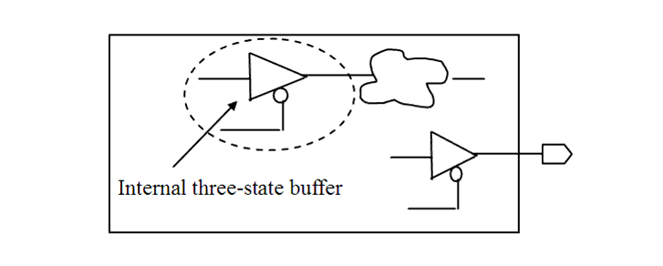

| Description | This rule fires when Leda detects internal three-state buffers in the design. This exclude those internal tri-state buffers that are connected directly to the primary input/output. |
| Policy | DESIGN |
| Ruleset | STRUCTURE |
| Language | VHDL/Verilog |
| Type | Hardware |
| Severity | Error |
This is an example of invalid Verilog code, followed by a circuit diagram that illustrates the problem:
module ntl_str34_top ; ... output Dout; //Dout is tri-state output wire inter_data, inter_ctrl, inter_din; //internal signals assign Dout = Ctrl ? Din : 1'bz; // OK assign inter _data = inter _ctrl ? inter _din : 1'bz; // NTL_STR34 fires -- internal three-state buffer endmodule